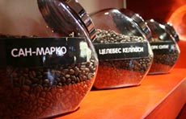
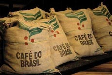

Сорта кофе

- Сорта кофе часто путают с видами кофе. Видов кофе немного, основные из них это арабика и робуста. В свою
очередь эти виды делятся на большое количество сортов (порядка нескольких тысяч), отличающихся между собой своими вкусовыми и ароматическими характеристиками.
- В качестве имени сорта могут выступать:
-
- страна происхождения;
- порт, из которого осуществляется поставка;
- вид или подвид кофейного дерева(Bourbon, Typica и т.д.);
- название хозяйства, поместья, владения, где выращивают кофе;
- название местности, горы, долины или близлежащего города;
- классификация, принятая в стране-производителе;
- коммерческое название фирмы-производителя.
По стране происхождения
- Критерии качества кофейных зерен в различных странах-производителях часто различаются. Поэтому и маркировка кофе от страны к стране может меняться.
- По странам производителям, наиболее популярные сорта зеленого кофе можно разделить на три основные группы: азиатские, африканские и
американские.
- Американские (колумбийский, костариканский, бразильский, кубинский).
- Для мексиканских сортов характерны маркировки: Altura и Good Washed. Кофе с таким обозначением произрастает на высоте 1000 - 1500 метров над уровнем
моря.
- А для гондурасского, сальвадорского и костариканского кофе, произрастающего на высоте 700 - 1000 метров над уровнем моря - Central Standart. Которая
может дополняться аббревиатурами:
-
- HG – кофе выросший на высоте 1000 - 1500 метров над уровнем моря;
- HGW – 1000 - 1500 метров и прошедший влажную обработку;
- SHG – выросший на высоте от 1500 до 2000 метров над уровнем моря;
- SHGW – 1500 - 2000 метров и прошедший влажную обработку.
- Так же в Мексике и Центральной Америке кофе может маркироваться по твердости зерна:
-
- SHB – зерна высшей степени твердости. Это элитная арабика, выращенная на высоте более 1400 метров над
уровнем моря;
- HB или MG – зерна высокой твердости, произрастающие на высоте 1200 - 1400 метров над уровнем моря;
- MHB - зерна средней твердости с равнинных плантаций;
- LGA – самая низкая категория кофе.
- Африканские (кенийский, замбийский, эфиопский, гвинейский, бурундийский).
- Для кенийских сортов: «АА» - зерна высшего качества, «АВ» - кенийский гороховидный сорт.
- Для гвинейских сортов: «АА» - качественный кофе, «А» - хороший кофе со средней кислотностью, «АВ» - средний по качеству сорт кофе.
- Бурундийские сорта классифицируются на семь степеней качества: от ААА до ВВВ. Самый лучший сорт – ААА, он дает великолепный настой и аромат, самый
низший сорт – ВВВ и он годится только для смешивания.
- Азиатские (индийский, йеменский, индонезийский, вьетнамский).
- Большая часть индонезийских сортов имеет шесть ступеней качества, лучший из которых имеет маркировку АР.
По другим качествам

- Помимо классификации кофе по странам, существует и другие критерии деления сортов кофе: возраст, вкусовые качества, способ выращивания и др.
- Organic coffees – экологически чистые сорта кофе, выращенные без применения химических и прочих средств для обработки
деревьев. Подтверждать такую маркировку должны соответствующие сертификаты, и поскольку такие документы, да и сам способ производства весьма дорогостоящий,
кофе таких сортов отличается высокой ценой.
- Mild (англ. - мягкий, легкий) – в эту категорию включают лучшие сорта арабики, которые обладают мягким и абсолютно некрепким вкусом.
Зерна с такой маркировкой считаются высокогорными, хотя для этого им необходимо произрастать на высоте не менее 500 метров над уровнем моря.
- PB (англ. peaberry - горох). Почти все ягоды кофейных деревьев содержат в себе два зерна, но бывают случаи, когда они сростаются в одно.
Такие зерна помечаются и продаются отдельно. Peaberry обычно составляют около 5% любого урожая кофе.
- По степени свежести зерен:
-
- New crap – свежие кофейные зерна;
- Old crap – прошлогодний урожай.
- По возрасту кофейных зерен:
- Mature, Old – зерна выдержанные на специальных складах от 1 до 3 лет;
- Vintage coffee или Aged coffee – выдержанные от 6 до 10 лет.